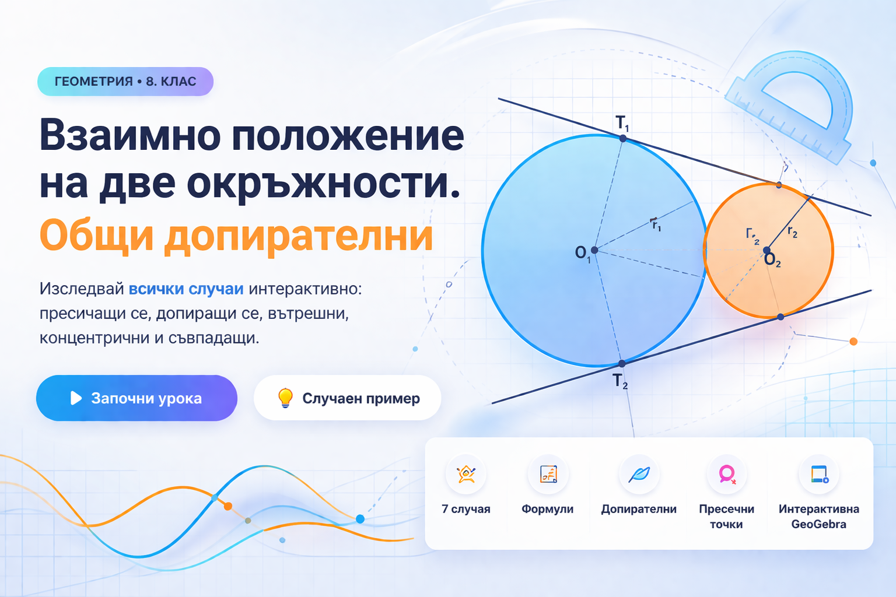

Идея и педагогически решения: Валя Витковска
|
Реализация: Gemini
Обобщителна таблица
| Взаимно положение | Чертеж | Условие (Зависимост) | Общи точки | Общи допирателни |
|---|---|---|---|---|
| Външни окръжности | d > r₁ + r₂ | 0 |
4
(2 външни, 2 вътрешни)
|
|
| Допират се външно | d = r₁ + r₂ | 1 |
3
(2 външни, 1 вътрешна)
|
|
| Пресичат се | |r₁ - r₂| < d < r₁ + r₂ | 2 |
2
(само външни)
|
|
| Допират се вътрешно | d = |r₁ - r₂|, d ≠ 0 | 1 |
1
(външна)
|
|
| Вътрешни (една в друга) | 0 < d < |r₁ - r₂| | 0 |
0
|
|
| Концентрични | d = 0, r₁ ≠ r₂ | 0 |
0
|
|
| Съвпадащи | d = 0, r₁ = r₂ | ∞ |
Безброй
|
Задачи за самостоятелно упражнение (Интерактивни)
1 Общи точки и взаимно положение
-
Дадени са окръжностите k1(O1; R), R = 8 cm и k2(O2; r), r = 5 cm. Колко общи точки имат двете окръжности, ако разстоянието d между центровете им е равно на:
-
Дадени са окръжностите k1(O1; R), R = 10,5 cm и k2(O2; r), r = 3,8 cm. Определете взаимното положение на двете окръжности, ако разстоянието d е равно на:
-
Дадени са окръжностите k1(O1; R), R = 15,3 cm и k2(O2; r), r = 6,7 cm. Намерете разстоянието d, ако окръжностите се допират:
-
Дадени са окръжностите k1(O1; R) и k2(O2; R), които се пресичат в точките A и B. Докажете, че O1A || O2B.
-
Дадена е отсечка OA = R. Окръжностите k1(O; R) и k2(A; R) се пресичат в M и N, а централата им ги пресича в P и Q.
Докажете, че ANOM и MPNQ са ромбове.
2 Общи допирателни
-
Окръжности k1(R=10 cm) и k2(r=4,5 cm). Колко общи допирателни имат, ако разстоянието d е:
-
Окръжностите k1(R=7) и k2(r=4) имат три общи допирателни. Намерете O1O2.
-
Окръжностите k1(R=13) и k2(r=7) имат една обща допирателна. Намерете O1O2.
-
Докажете, че допирните точки на общите външни допирателни до две окръжности са върхове на трапец.
-
Докажете, че допирните точки на общите вътрешни допирателни до две окръжности са върхове на трапец.